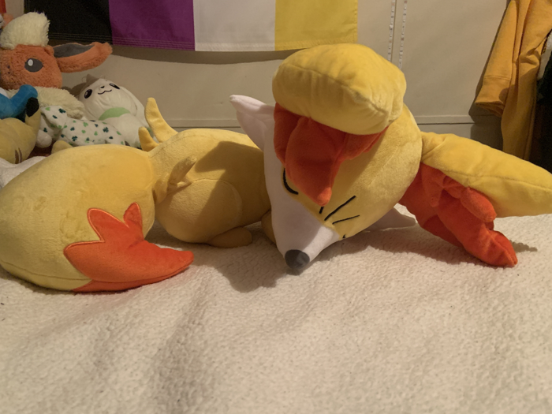
New Years Sleeping Plush
Made by: Pokemon Center
Released: New Years 2015
Bought from: JP Mercari
Another New Years Fennekin, and the absolute grail of my collection!!! I can't even begin to describe how happy I am to have this little girl sleep next to me each night, and to have found her at such a bargain one day... She was waiting at home for me after I got back home from visiting my best friend for the very first time, so it's really memorable for me. She's super soft and squishy, in a way where she almost feels made of mochi fabric. She's a perfect sleeping buddy.
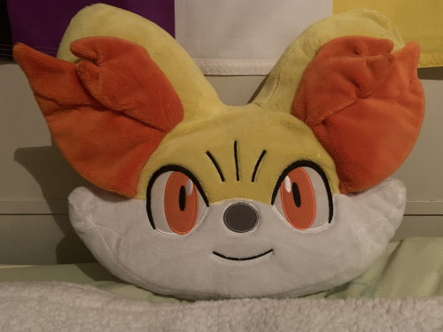
New Years Face Cushion Plush
Made by: Pokemon Center
Released: New Years 2014
Bought from: US Mercari
This is the softest plush in my collection as of right now, and I'm very pleased to own this one! This plush was only sold in Japanese Pokemon Centers on January 1, 2014 as part of a "lucky bag" set. As a result it's a little harder to come by, but I got this one at a decently discounted price - and the seller even included the next plush on the list for free!
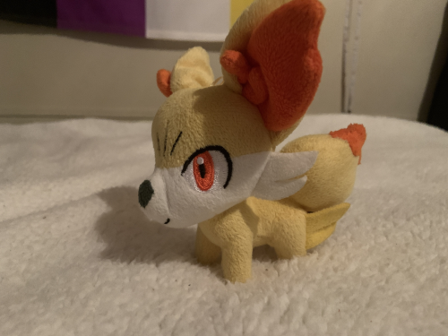
My Poke Collection Plush
Made by: Banpresto
Released: ???
Bought from: Us Mercari
This was a free gift with the New Years Cushion plush, and I couldn't be happier! She's missing her tush tag, which is a shame - because I particularly like this plush's tag - but it's okay. This plush is so cute! I love her face and her cute little legs. This photo doesn't show her off very well, though.
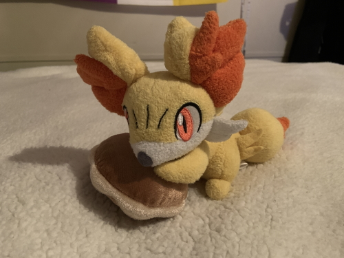
2014 Pokemon Amie Plush
Made by: Banpresto
Released: December 2014
Bought from: Japanese Mercari
This is one of the "sweetest" plushes in my collection. The fabric is a new one for me, and I initially thought that this was a softer but very pilled fur fabric. However, she's just unique! It has a nice texture that you don't get on many plushes. The Poke Puff she rests on is made of a different fabric that is softer and silkier. I really like this plush line.
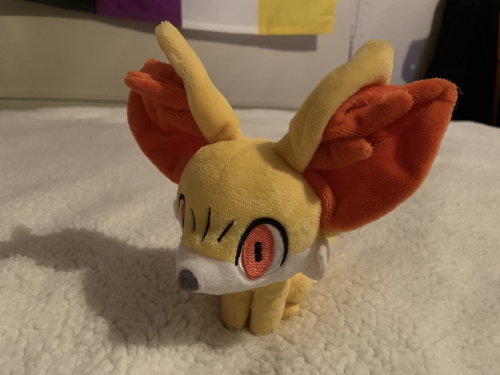
2013 Pokedoll Plush
Made by: Pokemon Center
Released: December 2013
Bought from: Japanese Mercari
Who can resist the cuteness of a Pokedoll? This is definitely one of the softest of the plushes I currently have, and is definitely the most fun for me to carry out and about. She doesn't have her tush tag, but I don't mind. I love her cute eyes, and the fact they lack their usual shine almost makes her look a little spooky - especially when you can't see her little smiling mouth like this. I love it!
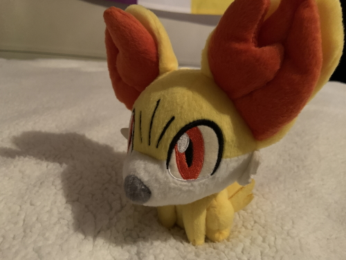
2014 Korotto Manmaru Plush
Made by: Banpresto
Released: April 2014
Bought from: Japanese Mercari
A very chibi, almost bobblehead-like plush design from Banpresto. She's made of a rougher fabric, but I love her silly short legs so much. I also like the ears on this plush in particular, though this particular photo doesn't show them off very well. This plush released in a set alongside Chespin, Froakie, Fletchling, and Helioptile.
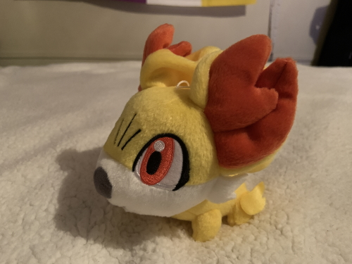
2017 Korotto Manmaru Plush
Made by: Banpresto
Released: November 2017
Bought from: Japanese Mercari
Another UFO plush similar to the last one, but I prefer this one! I knew that I wanted her the second that I saw her big goofy head. You also can see this plush's big, open smile from fewer angles than the previous ones - which gives it a sweet and shy look which I really like. This plush released in a UFO catcher set alongside Tepig and Charmander.
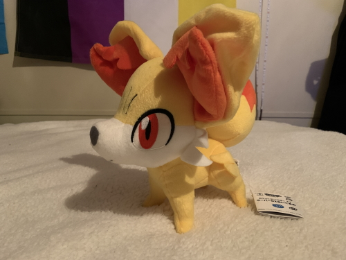
Super DX Plush
Made by: Banpresto
Released: October 2013
Bought from: Japanese Mercari
One of the bigger Fennekins I own, and the only one with a tush tag still in tact! Her legs are so skinny, but I love her little paws. Her pose in this plush in particular is very cute and sturdy. I think that her face is a little goofy in this one, though - her head looks like it's been put through a fish eye lens. I also am not a fan of how the ear's fluff is just a flat piece of fabric here like the extra fur tufts on the rest of the body.
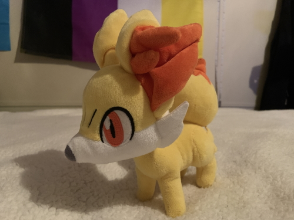
2013 Pokemon Center plush
Made by: Pokemon Center
Released: Some time in 2013
Bought from: Japanese Mercari
Finally, we have the original 2013 Pokemon Center plush. On the bigger side compared to some plushes, and I prefer her to the Super DX one. Although, her face is a tad squished as well. Pokemon Center plushes are always made with much softer fabrics than the Banpresto ones, which is nice.
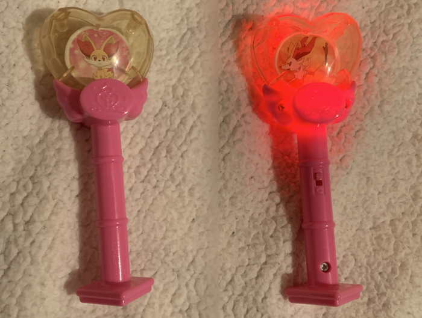
Fennekin Princess Key Baton
Made by: McDonalds
Released: July 24, 2015
Bought from: US Mercari
This is an item I didn't know of until I stumbled upon it on Mercari one day... I haven't seen much about it on the English side of the net, but this is a Japan exclusive Happy Meal toy set that ran in Japanese Mcdonalds back in 2015. It's very cute! It features both Fennekin and Braixen, and has a switch that when pressed lights up red. You can view the full toy set here.
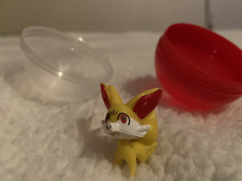
Small Thrift Shop Figure
Bought from: My local thrift store, 2/15/23
I got this figure while hanging out with an irl friend. The local thrift store has a gachapon machine with these figures in them for a quarter. When my friend and I each put a quarter in, I originally got a Slugma. When she put hers in, out popped this Fennekin! I couldn't believe it! So, we traded. She looks surprisingly okay for what I presume is one of the bootleg figures off of eBay, though I painted on her little black nose myself. A fun little memory!